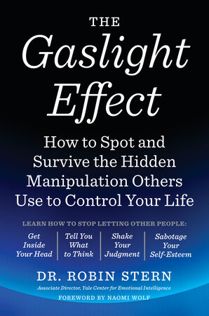
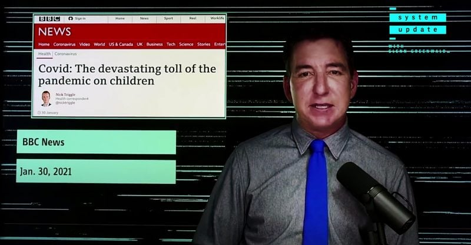

53:51 · 8 OPERE
Paura, intimidazione e ridicolo.
Il filo del discorso
Il contrasto fra la cura dell’anima e la ricerca dello splendore terreno introduce un esame polemico della comunicazione italiana nei primi giorni del settembre 2021. Il relatore legge titoli su Green pass, proteste e lavoro come forme di intimidazione e di delegittimazione di chi dissente. Condanna il danneggiamento di un gazebo ma critica il modo in cui viene raccontato e lo interpreta come conflitto fra persone prive di potere. Passa poi ai grafici sulla Svezia, che utilizza per contestare il racconto della pandemia; quei confronti, tuttavia, richiedono di distinguere anni, indicatori e popolazioni. La parte più ampia applica il concetto di gaslighting al rapporto fra autorità, stampa e cittadini: perdita di fiducia nel proprio giudizio, isolamento e pressione a conformarsi. La chiusura richiama Greenwald e una richiesta di analisi dei costi delle politiche pubbliche. La scheda rende riconoscibile questa tesi, conservandola come interpretazione del relatore e distinguendola da diagnosi psicologiche, conclusioni epidemiologiche e descrizioni del diritto vigente.
I libri nel discorso

Bibbia
Copertina: San Paolo, 2014 · Nuova Versione dai Testi Antichi · edizione di riferimento
Marco 8,36 e paralleli, Giobbe 2,4 e Salmo 49: passi riconoscibili, senza assegnare una edizione della Bibbia.
Passaggio 0:36 ↗ · Fonti e libro ↗
Pensieri
Identificazione probabile
Copertina: UTET · a cura di Bruno Nacci · 2021
Copertina autentica dell’edizione di riferimento, non attribuita all’esemplare del video.
Scommessa di Pascal: probabile richiamo al frammento dei Pensieri, titolo non pronunciato.
Passaggio 2:29 ↗ · Fonti e libro ↗
Papa Giulio scacciato dai cieli
Copertina: Argo, 1998
Testo di Erasmo su papa Giulio esplicito, riconoscibile nel dialogo già catalogato.
Passaggio 4:43 ↗ · Fonti e libro ↗
La società aperta e i suoi nemici
Copertina: Armando Editore · Classici · 2018 · volume unico
Copertina autentica di riferimento, controllata visivamente. L’edizione non è identificata come quella usata nel video.
Popper, Platone come nemico della società aperta: riferimento riconoscibile, edizione non determinata.
Passaggio 21:32 ↗ · Fonti e libro ↗
Media Control. The Spectacular Achievements of Propaganda
Identificazione probabile
Copertina della seconda edizione, immagine editoriale del volume: Seconda edizione ampliata, Seven Stories Press, 3 settembre 2002, 112 pagine, ISBN 9781583225363. Immagine tridimensionale autentica dell’editore con la copertina della seconda edizione. Non è La fabbrica del consenso, scritto con Edward S. Herman.
Titolo, autore, seconda edizione e fotografia dei contenitori della stampa verificati nella immagine intera. È un’immagine editoriale tridimensionale del libro reale, non un segnaposto ricostruito. La frase non consente da sola di stabilire se nel video la fonte sia il libro o una intervista.
Chomsky e paragone propaganda/manganello espliciti; Media Control è un riscontro probabile, la stessa frase compare in una intervista WBAI.
Passaggio 24:33 ↗ · Fonti e libro ↗
The X-Files
Identificazione probabile
Immagine promozionale ufficiale della serie The X-Files: Serie creata da Chris Carter, 1993–2018, undici stagioni. Immagine promozionale ufficiale Disney+ con David Duchovny e Gillian Anderson. Il riferimento è alla serie; non si confonde il poster nell’ufficio di Mulder con il film del 2008 The X-Files: I Want to Believe.
Immagine autentica vista interamente: Mulder e Scully, tratta dalla pagina ufficiale della serie. Non è la fotografia del poster dell’ufficio e non dimostra quale episodio sia evocato; non è copertina di libro o locandina del film 2008.
Serie sugli alieni e poster I want to believe: probabile The X-Files, nessun episodio identificato.
Passaggio 38:05 ↗ · Fonti e libro ↗
The Gaslight Effect
Identificazione probabile
Copertina: Opera pubblicata nel 2007; copertina della edizione Harmony in brossura del 9 gennaio 2018, 304 pagine, ISBN 9780767924467. Non si attribuisce a questa ristampa la paginazione della prima edizione o un esemplare preciso utilizzato dal relatore.
Copertina editoriale autentica, vista interamente, con nome Robin Stern e titolo. L’attribuzione del libro al riferimento orale rimane probabile: il solo nome della studiosa non dimostra che il relatore stia leggendo questa edizione. Il termine gaslighting precede la pubblicazione del volume.
Robin Stern e gaslighting espliciti, collegamento probabile al suo libro; titolo ed esemplare non pronunciati.
Passaggio 38:50 ↗ · Fonti e libro ↗
Glenn Greenwald: How Many Lives Will Be Lost Because of ‘Irrational’ COVID Policies?
Immagine di apertura dell’articolo The Defender, 30 agosto 2021: Articolo del 30 agosto 2021 firmato Children’s Health Defense Team, che presenta e incorpora un intervento video di Glenn Greenwald. Immagine di apertura autentica della pagina, con Greenwald davanti a una schermata di notizie. Non è un libro, un articolo clinico o un testo firmato dal commentatore P. Douglas.
Fotografia del video di Greenwald usata nella pagina, controllata interamente. Il 30 gennaio 2021 visibile nella notizia BBC dentro la immagine è la data di quel ritaglio, non la pubblicazione dell’articolo The Defender. Il commento finale letto dal relatore non è stato collazionato nell’archivio dei commenti.
The Defender, Greenwald e analisi dei costi dei limiti sanitari: corrispondenza con articolo e video del 30 agosto 2021.
Passaggio 49:58 ↗ · Fonti e libro ↗